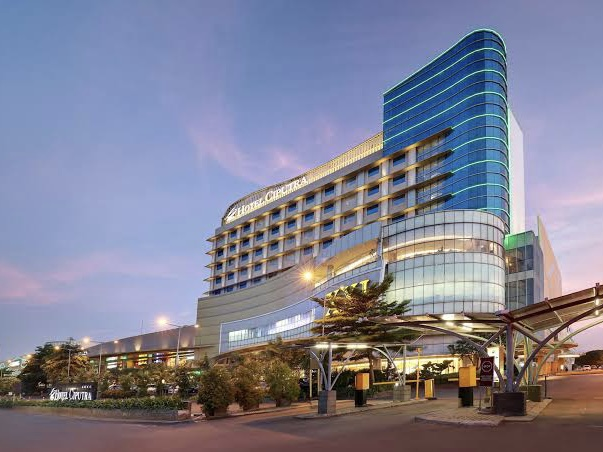
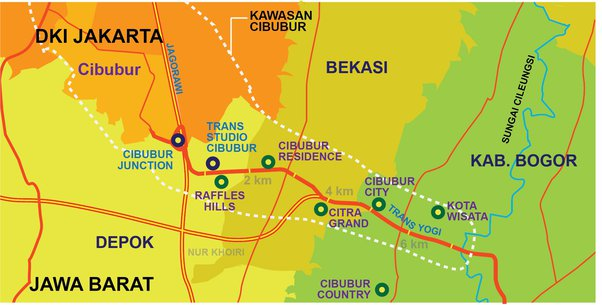

My Hometown
I live in Cibubur. For those who lived outside JaBoDeTaBek might not be familiar with the name of “Cibubur”. And it’s quite hard to explain the exact location of Cibubur since Cibubur includes East Jakarta, Bogor Regency, Depok City and Bekasi City. I attached a “divided-area” map of Cibubur and some of my favorite place to-go in Cibubur below!
1 / 5

Ciputra Cibubur Mall
2 / 5

Global Mandiri School
3 / 5

Trans Studio Cibubur
4 / 5

Starbucks Kota Wisata
5 / 5

Map of Cibubur